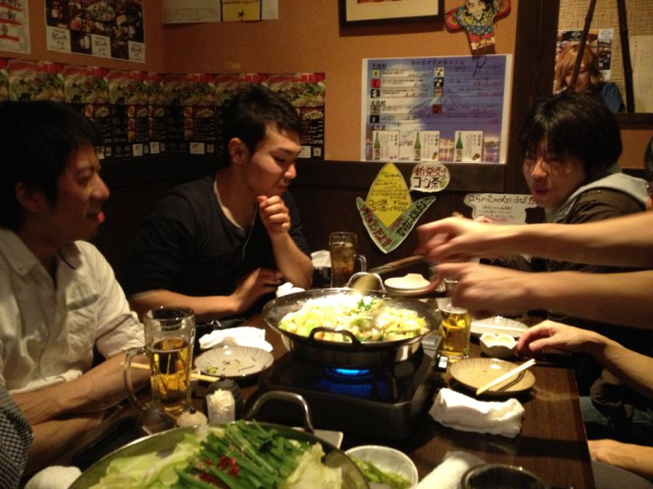
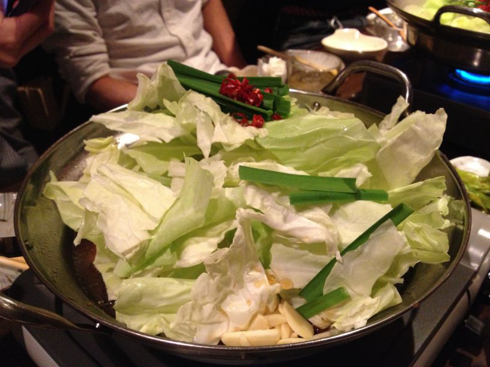
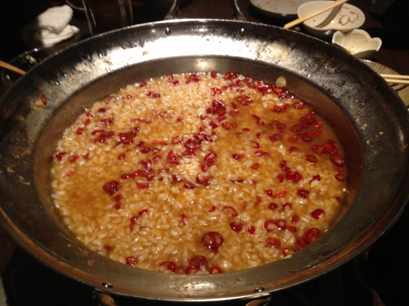
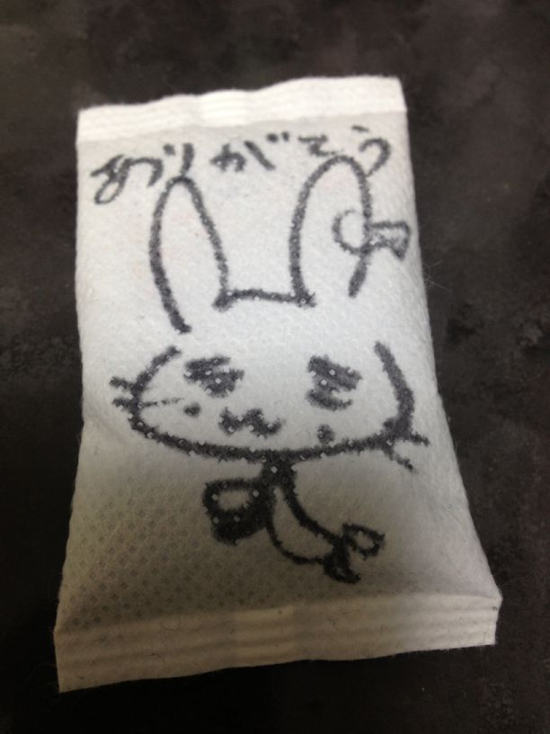
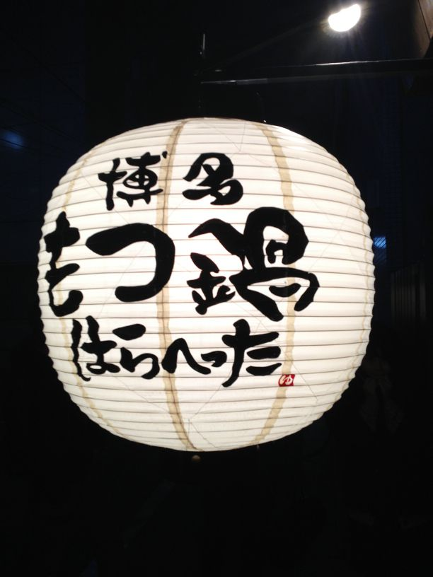
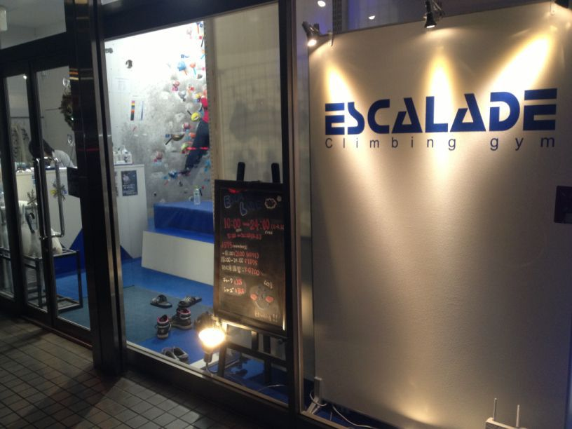
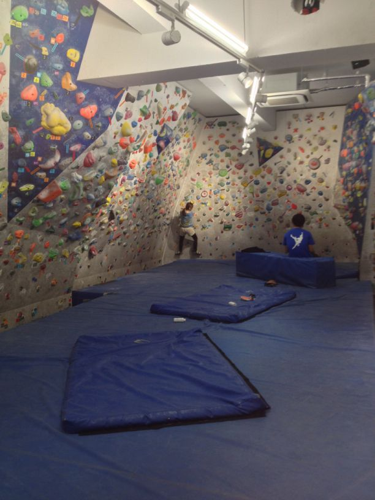
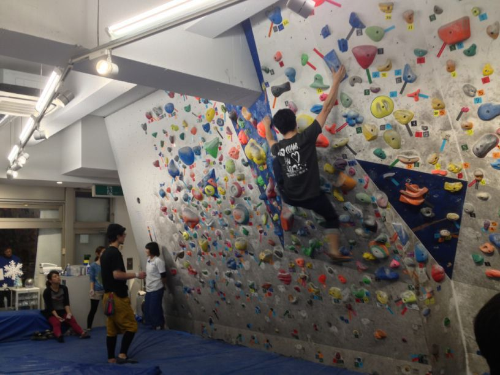
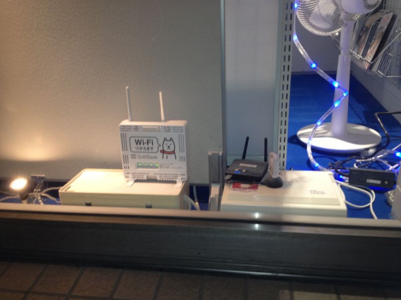
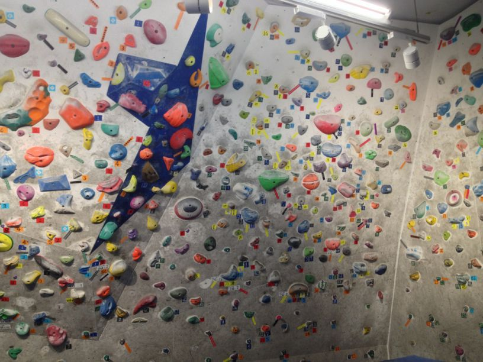

Python ボルダリング部 忘年会レポート
#kabepy Advent Calendar の11日目を書きます。 @kashew_nuts です。
去る12/8(土)に Python ボルダリング部の忘年会が行われました。今回はそのレポートをしたいと思います。昨年の12月に Python ボルダリング部が発足したので、実は今回が初の忘年会です。
- イベントページ: Python ボルダリング部 #14 + 忘年会
- 忘年会の光景: kabepy 忘年会 2012
ロケーション
錦糸町駅から徒歩2分。南口改札を抜けて陸橋を斜め左に渡ると「みずほ銀行」があります。その「みずほ銀行」の裏の通りにありました。風情漂う木造作りに大きな提灯が目印。どこか懐かしい感じです。中に入ると、威勢の良いスタッフさんたちが迎えてくれました。
忘年会詳細
今回は博多のモツ鍋をいただける「 はらへった 」というお店に行きました。
席につくと、Facebook でチェックインするとドリンク1杯無料とのクーポンを見つけ、みなさん一斉にチェックイン。ここではまだモツ鍋が席に届いていないにも関わらず「モツ鍋うまい」という出すメンバーも:D
当日はアラカルトでの予約でしたので、メニューを見て好き好きに注文します。鍋ははもちろんモツ鍋を注文。
食事の間に話されたのみ壁のことが中心でした。プロテインの効率的なとり方についてや、来年1月に行われる Python mini hack-a-thon 雪山合宿 についてなど楽しく雑談しながら、食事に舌鼓を打つメンバー。
{kind=link}

思わずモツ鍋のおかわり。しかし、ここで異変が…… 「辛さが足りない。」 何と辛い物好きのメンバーによる鷹の爪を増量する行為が始まりました。これはいけない。通常の状態との比較をしてみますと、
通常Ver
{kind=link}

鷹の爪マシマシVer
{kind=link}
鷹の爪マシマシとかおかしい。 あまりの辛さに先程までの雰囲気は一変しました。。後にスタッフさんに聞いた所、「こんな色は初めて見ました。」とのこと。
何か別のメニューではないかと疑ってしまうほどのおじや
{kind=link}

おじやも博多麺も相当の辛さに。おじやは卵のおかげもあり、何とか行けましたが相当辛かったです……
最後に思わぬ事態も起きましたが、2時間余りの時を有意義に過ごすことができました。
解散
帰り際、はらへったのスタッフさんからプレゼントを頂きました。これです。
{kind=link}

何とイラスト入りのホッカイロを頂きました！実はこっそりと描いてくださっていたようです。それぞれが柄の違うホッカイロに感心しながら帰路につきました。
終わりに
忘年会は終わりましたが、壁納めはまだ終わっていません。また自主練で登ることでしょう。「また壁で。」と挨拶を交わし、解散いたしました。
店舗情報
- 博多もつ鍋 はらへった 本陣 - 錦糸町/もつ鍋
- 住所: 東京都墨田区江東橋4-26-18 高橋ビル１Ｆ
- 電話: 03-5624-0414
- 平均予算: ¥4,500前後
{kind=link}

エスカラード クライミングジム新宿
#kabepy Advent Calendar の6日目を書きます。 @kashew_nuts です。
ボルダリング初心者ですが、何故か Advent Calendar を書くことになりました。
エスカラード は #kabepy の面子が自主練や pyhack 後の壁懇親会として集まる場所のようです。土日祝日問わず夜24時まで営業しているので、夜遅くなっても気兼ねなく登れます。
{kind=link}

お前だれよ
お約束ですね。
- @kashew_nuts といいます。ボルダリング歴は半年ほど。
- 月に1,2回程度壁に登っています。秋葉原の B-PUMP や江戸川橋の T-WALL にいたり。
- そろそろボルダリングシューズが欲しいと思っています。(いやまだはやい。)
ロケーション
新宿駅西口より徒歩10分ほど。仕事帰りにふと行きたくなった時も行きやすいですね。ジムへ向かう通り道に百貨店やハルクスポーツがあるので、着替えをもってきていなくても安心です。美味しそうな匂いがする中、歩いて行くと吉野家が見えます。そこを右折すると見えるのがエスカラードです。
設備
ジムは一階にすべて収まっていますが、初心者〜上級者まで幅広いボルダーが登れるようになっています。
{kind=link}

ロッカー、更衣室完備です。ロッカーはかばん(ブリーフケース)と着替え程度なら楽に入ります。 ジムによっては財布や携帯などの小物しか入れられない所もあるので、これは嬉しいポイントです。
{kind=link}

ボルダリングとは直接関係ありませんが、docomo, au, softbank の公衆無線LANサービスを設置していました。「ボルダリングでここがわからない！困った！」という時は無線LANを活用して、この #kabepy Advent Calendar で調べ物……なんていうのもありかもれしれませんね。:D
{kind=link}

おすすめどころ
エスカラード をおすすめする理由は以下の3つになります。
- 新宿駅から10分程度という立地の良さ
- 初心者〜上級者まで幅広く対応している (初心者講習も準備しているので初めてでも安心)
- 営業時間が長いので仕事終わりでも安心 (平日は8:00〜24:00, 土日祝日10:00～24:00)
場所が新宿にあるので、ボルダリングで汗を流した後はご飯も美味しく頂けますね！
おわりに
{kind=link}

ボルダリングの魅力は様々ですが、例えば以下のようなものがあります。
- 筋肉がある人が力で登るのではなく、むしろ細身の方が軽快に登ることがある
- イメージで幾通りもの登り方ができる奥深さがある
- 動きやすい格好であればどのような服装でもいいため気軽
etc….
この3つは自分がボルダリングに惹かれた理由の一部ですが、他にもたくさんあるはずです。ボルダリングに少しでも興味を持たれたようでしたら、まずは Python ボルダリング部 に参加して、一歩を踏み出して見ませんか？
おまけ
来月誕生日を迎えるので、Amazon の WishList を載せてみますね:) クリスマスプレゼント、誕生日プレゼント待ってまーす。 Amazon WishList
店舗情報
- 店舗名 エスカラード クライミングジム
- 住所 〒160-0023 東京都新宿区西新宿7-5-20 新宿旭ビル
- アクセス http://www.escalade-climbing.com/access/
Python Developers Festa 2012.11に参加しました。 #pyfes
イベント詳細
モクモクタイム
9:00に開場し、13:00まではフリータイムでした。 今回はハンズオンが行われなかったので、かわりに先日参加した Sphinx Hack-a-thon で手を つけたTinkererのカスタマイズをしていました。今回実装したものは以下の通り。
- Facebook Comment追加
- SidebarにCategories, Tags追加
- RSSリーダーをデフォルトのものからFeedBurnerに変更。
実は今日初めて python -m SimpleHTTPServer を使いました。これはかなり便利ですね。 ローカルの環境でさくっとWebサーバを立ち上げることができたので、Tinkererの動作検証が かなり楽でした。いちいち本番環境にデプロイして確認するわけにもいかないですからね。
あとは「Twitterの埋め込みタイムライン、ツイートボタンの追加」までできればひと通りの 機能は実装できるかと思いますが、何故かうまくいきませんでした。これを何とかしたいですね。
(11/25追記) Twitterの埋め込みですが、conf.pyにtemplateの場所をフルパスで指定するとビルド できました。エラー内容を見てみるとraise TemplateNotFound(template)と上がっていたのでもし かしたらと試したら……
発表(プレゼン)
14:00過ぎから開始。1プレゼン20分目安で実施されました。発表者だけがもらえるというキラキラ ステッカー欲しいですね。発表事態は当初22:00までには終えたいとのことでしたが、発表者の方 が二人参加できなかったこともあり、21:00前には終えることができました。
@torufurukawa What’s New Python 3.3
- 「逃げちゃダメだ」のタイミングでボタンを押すアプリ。
- yield from構文 今まで何度もyieldで外にだしていたのを、まとめてだせる。
- u 復活で2.xからの移行がしやくなった。
- ↑ここまで前々回と同じ ↓ここからNew!
- faulthandlerモジュールで低レベルなエラーをダンプ
- ipaddressモジュールでIPアドレスやネットワークを抽象化
- lzma xzの圧縮・解答ができる。
- サードパーティのツールを標準で組み込むようになってきた。
- unittest.mockで依存関係を断ち切ったテストを書く。
- venvモジュールでもpackagingは見送り
- 他 内部のパフォーマンスが変わりました。
- 参考資料:
@shiumachi Claudia Impala 低レイテンシクエリエンジン
- 資料: Cloudera Impala 低レイテンシクエリエンジン
- 仕事中ですが、このために20分だけ抜けてきました。
- Impalaとは → Google Dremil, F1などにインスパイアされて開発された。
- Hadoop(MapReduce)だと高レイテンシで、すぐに結果が欲しくても処理に時間がかかる。 →手軽に使えるものが欲しかった。
- Hiveなどに比べかなり速い。
- 0.2時点で基本的な機能は搭載されているが、されていないものもたくさん。
- Hiveに搭載されているものは、ほとんどできない。 Hive…定期処理、Impala…分析、試行錯誤
@everes NOT FREE
- 正式に django 活動引退しました。
- 2013 そろそろ仕事の話をしようか。→TOLOT
- 技術的なお話はしません。
- 印刷機探しから始めました。工場もスケールする。
- FREEMIUM?→難しい。どこか成功している？これをTOLOTにしてみないか
- TOLOT+はNOT FREE 搭載するのは基本機能だけ。他のサービスとデータ連携しやすくした。
- 会社の雰囲気→Testman 数日前にできたので、誰もしらないはず。
- PHPUnitが嫌だったので、作ってみた。
- システムは工場です。
- TOLOT、印刷ができるまでの全行程
@omo2009 Webkitで使われているPythonの紹介
- steps to phantasien の中の人
- 検索の会社でブラウザ作ったり。Webkit。
- Webkitで使われているサードパーティツール
- Webkit: Buildbot, Trac (WebKitのPython部分 → 90,000/1,400,000行)
- Chromium: Rietveld, GYP, App Engine
- CLI Tools Webkitでの開発は色々な人が色々なツールを使うので、ラップのため使用している。
- webkit-pathch(一番使われているツール)
- runwebkit-test
- webkit-pathch: An army knife for patch cooking アーミーナイフ的なもの。
- プロジェクト固有のツールは作ったほうがいい。
- コマンドラインのツールやスクリプティングで、残念なインフラをましにできる。
- 自動化できる。面倒くさいものは誰かが書いてチェックインすれば、サブコマンドが追加できる。
- 得体のしれないプロペラパッケージよりも、コマンドラインで頑張ったほうが自動化が捗る。
@IanMLewis & @AE35 The connpass Story
- 誰だお前ら→ミスター「お前誰よ」&お久しぶりですはじめまして。
- connpass: BPが運営しているイベント支援サイト
- 経緯など 2011.10リリース → きっかけは2010.08のdjangodash(ここではread the docsも)
- ATND使いにくいよね→ 「こうだったらいいなぁ……」を作りはじめた。
- 大事だと思っていること→実生活のつながり(人脈)、知識の共有、成長→コミュニティが重要
- ヒューマンコミュニティのつながりを広げるサービス→conpass
- ワークフロー redmine → Mercurial → rietveld → connpass
- サーバーサイド MR.DUNG = MySQL, Redis, Django, Unix, Nginx, Gunicorn
- DUNGというのはDjangoのスタックで、これにMRをつけた。
- 更に拡張→MR DUNG JAWS = MR DUNG Japan Amazon Web Services
- クライアントサイド
- “Javascript: The Evil Parts”
- JS→CoffeeScript 時間にゆとりができた時に部分的に書き換えたり。
- IT勉強会のイベントに限らず、イベント作ってね！
@methane 最速最強Webサーバーアーキテクチャ meinheld
- 資料: 最速最強Webサーバーアーキテクチャ
- Webサーバーの基本 Webサーバーは、HTTPリクエストを受け取ってHTTPリクエストを返すTCPサーバーです。
- 最強のアーキテクチャ(異論はry)
@takabow 今日は本の宣伝にきました。
- 資料: 本の紹介「絵で見てわかるITインフラの仕組み」
- Amazon: 絵でみてわかるITインフラの仕組み
- コンセプト * 実装の違いはあれインフラには共通点が多い * その本質について、絵を使ってイメージしながら学んでもらう
- 基礎は学んだけど、イメージがしにくいというあなたに。
@golden_kucky おれたちが考えた最強の出版システム
- 資料: おれたちが考えた最強の出版システム
- 某出版社の方から来ました
- チームの意見が一致するところ→「ソフトウェア業界の方法は出版業界にも使える」
- バージョン管理下の原稿から、直接
- ドキュメント形式には指向性がある
@turky 出版ネタ
- 資料: 出版ネタ
- 雑誌について
- ○しんじゃうぞ☆
- 「進行ができれば雑誌は作れる」と言われる。
- 締切を引き伸ばすテクニック
- 印刷所との交渉-鯖の読み合い
- 本文ページをだいわりごとに進行
- 締切重要
@tk0miya Excel方眼紙撲滅委員会
- 資料: Inside of excel 方眼紙撲滅委員会
- Sphinx Advent Calender参加者募集中
- SphinxConJPやります。
- Excelhogan: bloackdiagをExcel方眼紙に対応させるプラグイン作りました。その実装のお話。
- ネタに困ってimagedrawプラグイン作りました。
- blockdiagアップデート月間はじめました。今文句言うとリクエストが採用されやすいです。
@Jxck_ WebSocket & SPDY for non beginner
- 資料: WebSocket & SPDY for non beginner
- 発表者がスライド動かすと、自分のPCのブラウザ上のスライドも同時に動くとかすごい。
- エンジニアサポートCROSS 2013
@3_and_planet Applicationを支えるStorage技術
- 「私が一番かわいいと思うDS8000について」
- 「わたし AIX “ぐらい” しか分からないんですが」
- Storageについて最高いただくと性能出るかも and 運用楽になるかもです。
@moriyoshi PHP language update
- 資料: PHP language update
- Nov 15, 2012 PHP 5.5aリリース
- なぜいままでできなかったんだろうという機能(ジェネレータ、finally、……)
- 社畜バグ修正 weekdays(営業日ベースのオフセット)の処理に悲劇が → 突然の社畜
- 衝突の瞬間に立ち会えないのが残念です。(PHPはPythonに近づいている)
魚拓の中の人
- 福島原発メルトダウンについて
- 人間の優れているところとは何なのか
あしなが枠の方より
神戸からいらしたそうです。そこからPythonistaによるワンツーマンレッスン。そして豪華な 発表が聞けるなんてPyfesは本当に素晴らしいイベントですね！
PyFes 2012.11終了後に一杯引っ掛けて帰る人
非公式ながらpyfesでは珍しく懇談会が開催されました。少なくとも30人はいましたね。 自分は山、カメラ、壁と色んな話をお聞きしながら楽しませていただきました。再来週には 忘年会でまたお会いすると思うとまた楽しみです。
Pyfesを終えて
とりあえず何故か今回のpyfesで #kabepy と #sphinxjp のAdvent Calendarに参加することになりました。(どうしてこうなった……) しかし何はともあれ楽しませていただきました。運営の方々、参加者のみなさんお疲れ様でした＆ ありがとうございました。